Hello, I am a freshman at Stevens Institute of Technology, majoring in computer science. Most of what is written below was dones o in highschool. I am currently updating my website to a more clear design. Since highschool I have finished my Eagle, and have worked on many more projects while pursing interests in rock climbing.
Bio
My perspective can be explained through a series of sleepless nights, stuck in my mind. I find ideas can flow freely in your own world in the peace of the night. Some nights I just need to write, mostly ideas that must be written down or writing a lengthy answer on quora. Chasing how to understand down the rabbit hole and losing track of time. However, these ideas are not complete, unless they are tangible and it irks me until they are made. In this, I thank my friends and family, the strangers that I have come to know bonding over a shared passion allowing me to understand the world or rather reduce the uncertanity in it. Love what you do and go what you love but sometimes people forget to love listening and sharing. There are so many perspectives unshared, the true brilliance in this world unexplored. This has bended me to help others make their visions come true. Scouts, teachers, a new student that came to me learn, all coming together to work on something that embodies our shared love to create. I hope this website can give you insight to what I have done and my perspective to live life fully.
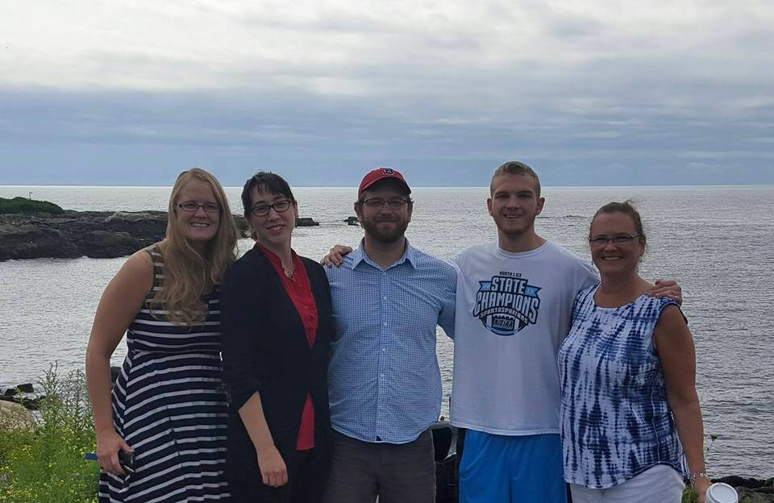My Siblings and I
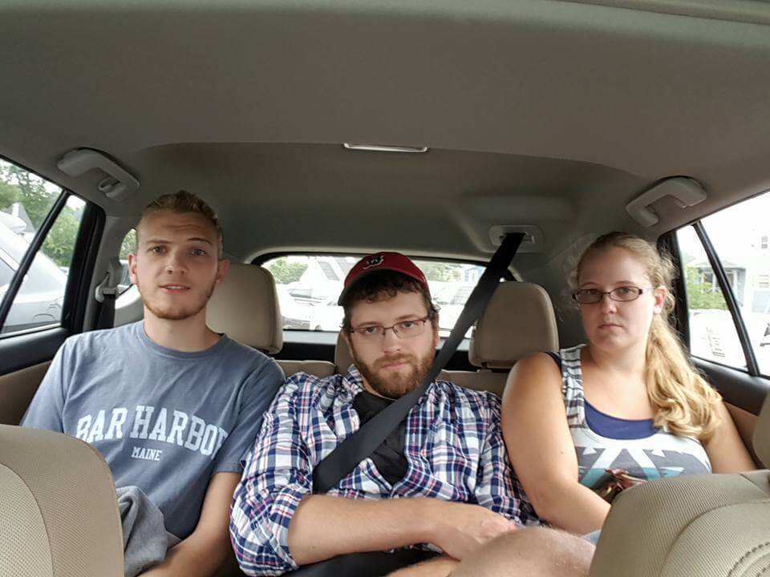Programming
After discovering my true passion for Computer Science the end of my sophomore year I dove into programming and have yet to stop coding. I bought a book about Java, spending my summer nights in a cabin in Maine on my mother’s craptop just programming. I went from hello world to battleship and then onto other fun games. From there I read Effective Java and Intro to Algorithms CLRS published by MIT. After much more studying and practice, I have dozens of programs to make my life easier, games to play with friends and other projects ranging from app development and game development to websites and algorithms. Due to my efforts, I was able to skip over VB2, JAVA and took AP Computer Science A. On the first day I saw that everyone in that classroom was someone who I respected. From there I have spent my time refining my skills, not sleeping, and working hard. I would rather show and not tell, so look at my projects or if you want me to tell, see my answers on Quora.
I am the President and Co-Founder of the Computer Science Club. Coming back Junior year I was approached by an old friend hearing my interest in programming. Dylan was ecstatic once he saw what I saw, the possibility to make any idea tangible. He asked me to teach him how to program and he became my first student. We stayed after school Monday through Thursday until five (Fridays we needed a break). Soon the word spread and others came too to learn but also to create. Friends, strangers, it did not matter we were all family after a short while bonding over pizza. There I set out to teach anyone willing to learn. We officially became a club when we learned you can get half off pizza for clubs, but that is a completely other story. Now we have over 25 members still going strong with multiple projects and learning sessions during lunch and after school.
Teaching
Currently I am a Teacher's Assistant in AP Computer Science and also a part of the IT internship program with the school for the second year. Outside of class I mentor multiple students who have come to me to learn. I want to express how I have been completely captured by my students, the satisfaction from teaching is breathtaking. I have come to be proud of my students and excited everyday to create a lesson plan or a lecture: theory, math, programming. But I can't express it completely except for the creative uniqueness that is shown in each individual student; the unique perspectives gained from each student. As my Envi Sci teacher, Mrs.Lovett would say, "To be the best student become a teacher". So to best express this feeling the class was given a random number and had to tell if it was a prime number. One of my students had problems with truncating integers and did not want help. So he created a nifty way of doing it. I sat down to look at his code because he had an error and I thought it looked familiar. I bounced off the seat when I figured out it was the sieve of Eratosthenes, one of the first algorithms ever created. All in all, teaching fulfills me when someone lights up over knowledge. Again check my posts on Quora and I will soon add a whole post just on teaching (like how to properly Obi Wan Kenobi, using the EDGE method, setting the bar super high, and other fun stories) and a video series on learning comptuer science, math, and how to program.
Climbing
Rock Climbing is one of my favourite activities. It is where I can set my mind to a challenge to overcome. Bouldering at the New Jersey Rock Gym, I have learned that climbing normally is climbing a route, bouldering is climbing a problem.
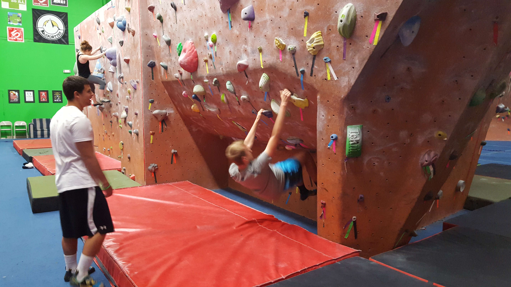Some problems are just a pain.
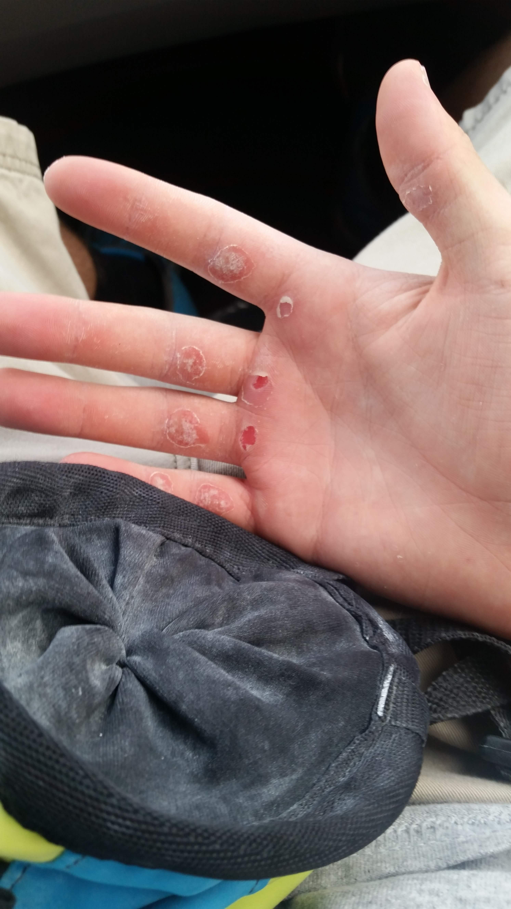Food
Whenever I find myself tense I tend to cook. One of my favourite recipes is homemade ramen in a broth that took at least 6 hours of boiling.
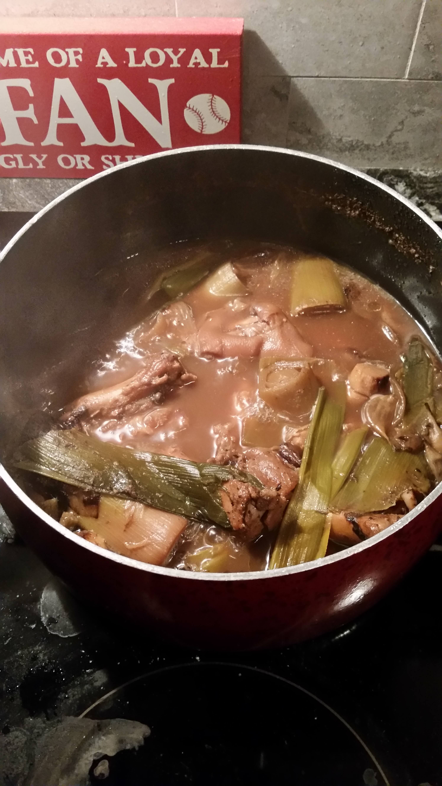 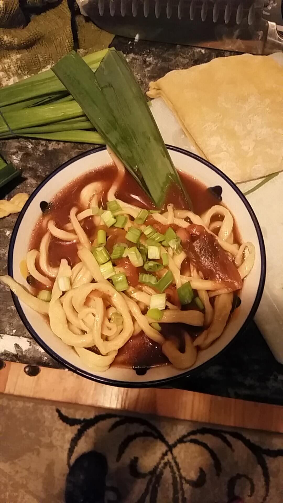However, when I need to study, I bake, the time between letting the bread rise allows the information to flow through. I like camping, but I adore backpacking due to the freedom on top of a mountain. To be focused, I cut out all consumption without purpose to give myself more time, still I lose sleep trying to find time. However when with friends, we have fun, we like to play cards and couch games.
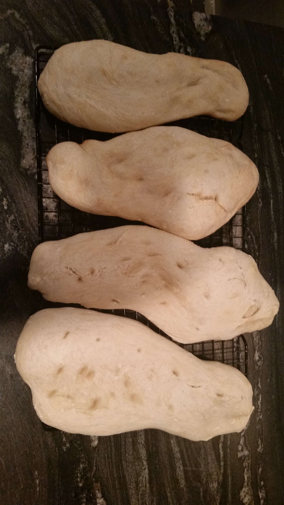Gotta love some Maine lobster.
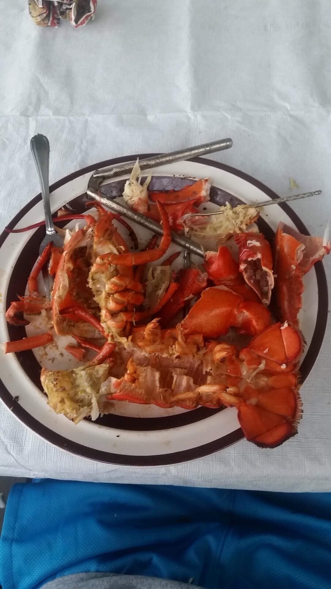Boy Scouts
Looking back I could never be more grateful for my experiences as a scout. Scouting has not only shaped who I am but will always be apart of me. My leaders have given me the wonderful gift of a moral compass and if you asked, I could recite off the top my head, "A scout is trustworthy, loyal, helpful, friendly, courteous, kind, obedient, cheerful, thrifty, brave, clean, and reverent", "On my honor I will do my best to do my duty to God and my country and to obey the Scout Law; to help other people at all times; to keep myself physically strong, mentally awake, and morally straight."," Do a good turn daily" and ALWAYS, always, always be prepared. If not, plan for the future. If not, plan for the worse case scenario. If not, be the best at improv.
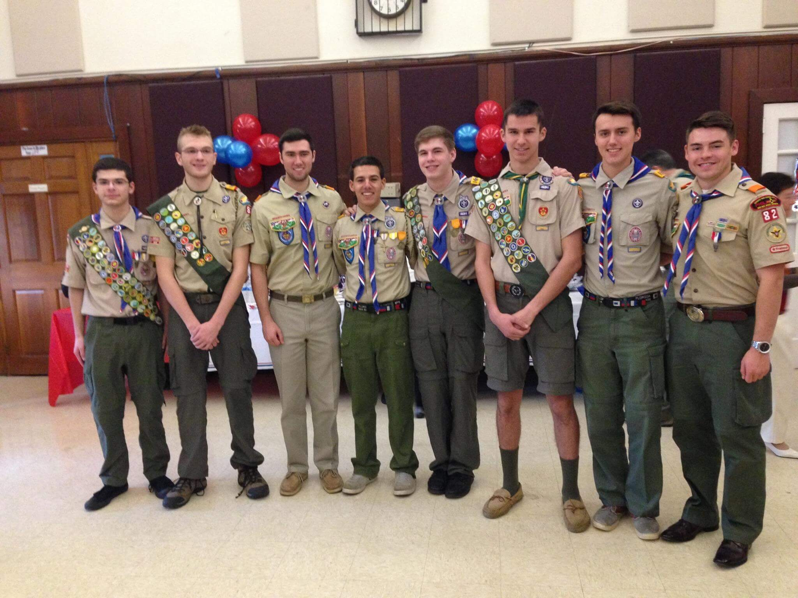As Senior Patrol Leader I have learned some of the in and outs of leadership. Check out my quora for more specific answers. The objective of leading is to lead together, carry the momentum of positive energy and never let it die. Leadership builds off of trust and momentum but also a form of equality. Leaders are not those big chested men who say "me tarzan", they are those who see the big picture and can act on the small scene. They are informed, a sense of all seeing and empathy. This plays a huge role in leading because a leader must sacrifice his joy for the joy and unity of the pack. From being a den leader handling small scouts, patrol leader feeding ten or senior patrol leader making sure everyone is happy and healthy you not only learn to lead but also how to interact with other leaders and most importantly be an amazing follower. You can tell when true leaders converse because it is so real, no self centeredness is shown only objectifying their goals, purpose, lay down a game plan involving the perspective of everyone involved(And they do it so efficiently.
Other Clubs
I started debating freshman year with my best friend, Chudi Onwuasoanya. We missed the bus one day and we decided to see what clubs there were. I am now the former captain of the Affirmative Team, and he is now the former captain of the negative team. It has been an adventure being the team's secretary for the last two years. Our first season was on a resolve that would take another paragraph to type out, but it was basically about increasing diplomatic/economic engagement with Cuba. Won the final league tournament. Next year was how to improve oceans, won the final league tournament. Last year was curtailing federal surveillance, we lost in the semi finals. This year we are going strong into increasing USA's diplomatic and/or economic engagement with China. We are part of the North Jersey Debate league and we conduct policy debate, one of the most difficult forms of debate. Update: We won first place affrimate team over the season and second place affirmative in the championship. I personally got third best speaker in the championship and tied for fourth best speaker in the league over the season. Contact me if you have any questions or if you are interested in knowing any of our past plans.
 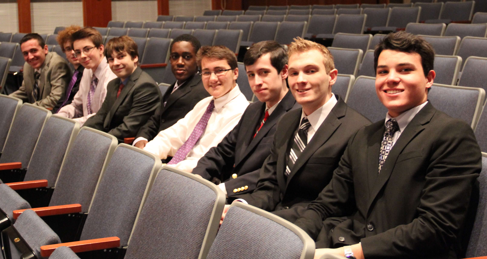
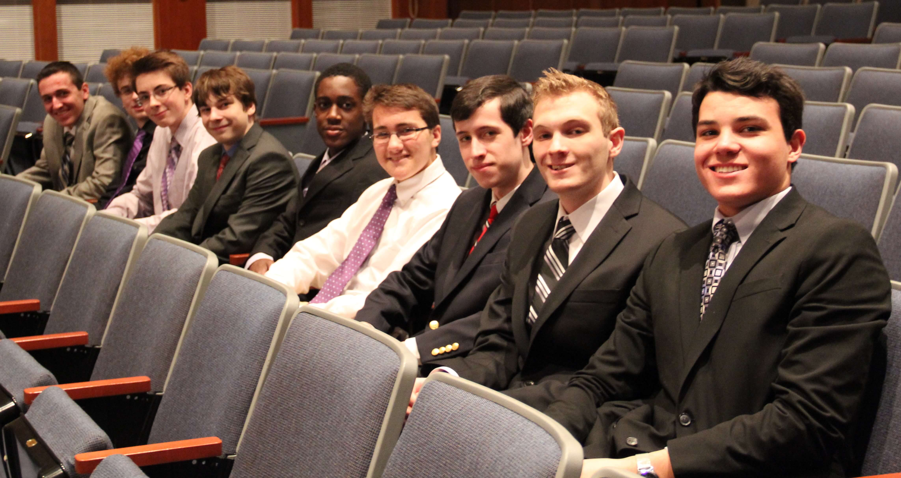
I have to thank an old friend for introducing me to robotics, but I really joined the club once I heard they needed a team programmer to lead the code effort in gaming the competition's autonomous segment. I still do code but now I am co-captain of one of the teams. I still very much enjoy mechanical engineering (when I thought I would major in it prior junior year) and now lead, design and help build the bot.
 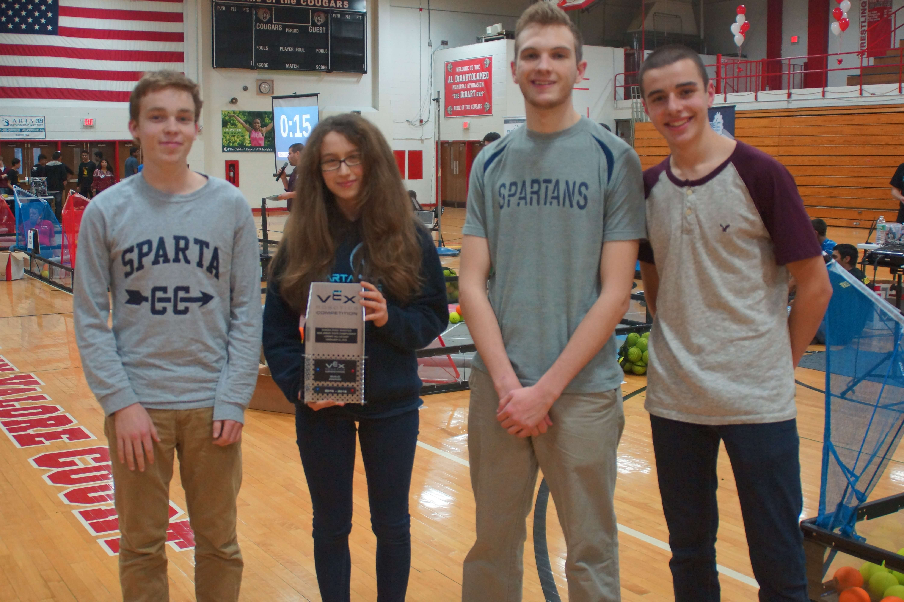
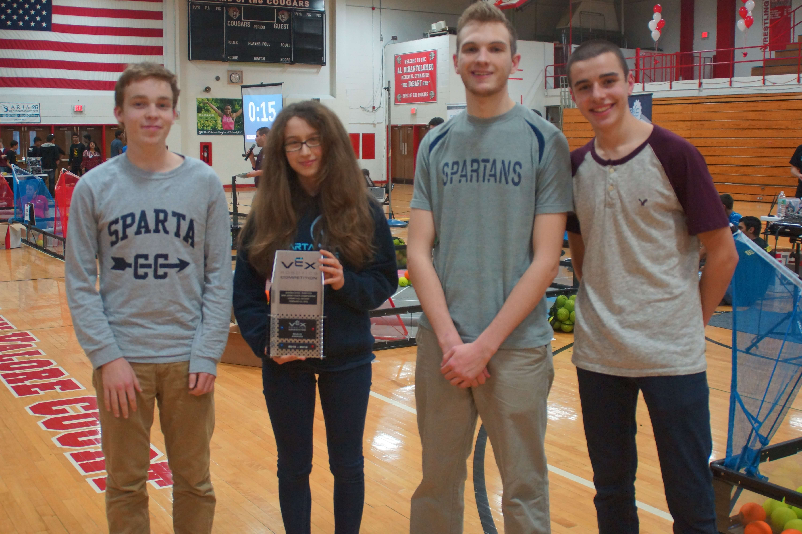
Quora and Writing
I answer questions either requested or best matched to me on Quora, ranging from math to basic life questions. Mostly I answer questions about self learning, how to learn, be passionate, coding, teaching, and leading. Check me out and I will also be starting a blog on Quora soon about problem solving and experiences problem solving. Also I write short stories and if I get a chance and like one enough I will share one on here. Also this plays in a huge part of my organisation, I always keep a few sheets of legal pag sheets in my wallet(ask and you can see) of what I need to do and ideas that come to me in the day. Most of them are conclusions. Moreover, there are post it notes everywhere on my desk of the same ideas. When I sit down and write I just have these ideas out in front of me, I will never write an outline for an essay. I go in with what I want to say but learn so much more in the writing process because you must explore your boundaries and skills as a writer. Moreover, just have fun with your writing.
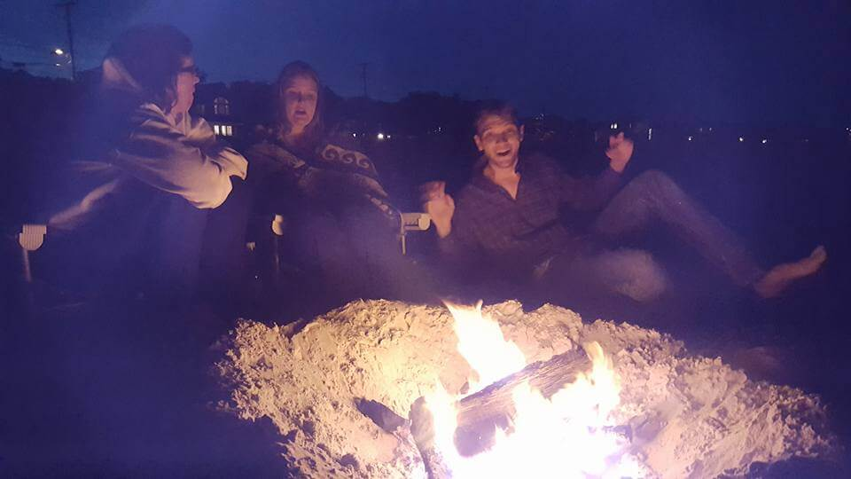By the way I am a bit of a math nerd. On my wishlist is a Klien Wine Bottle, a Gömböc, and a Curta Calculator.(Also a pasta maker).
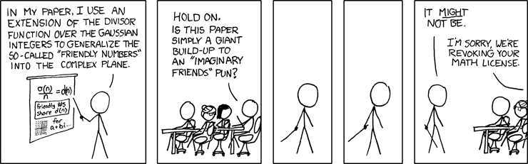I got a Klien bottle!!!
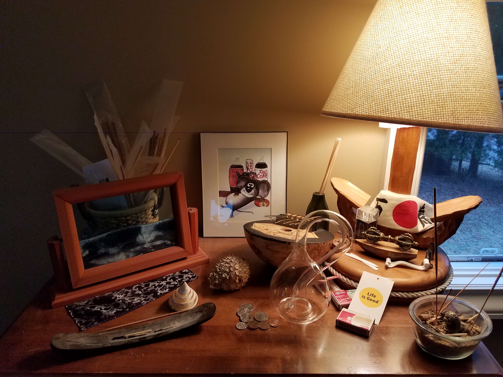